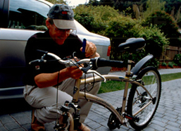
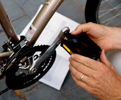

Quick Start Assembly Guide
HomeStep 1: Handlebars

Remove the small black plastic plug on top of the Stem Bolt. Loosen Stem Bolt by turning 1-3 turns clockwise. Now insert Handlebar Stem into the Head Tube of the bicycle frame. Leave about 2 inches showing - never raise above the Minimum Insertion Line as marked on Stem. Use 6 mm (large) Allen key to firmly tighten the Stem Bolt. Replace black plug.
Adjust Handlebar Tilt Arm by loosing the bolt on the underside of the handlebar. Raise handlebar until the arrow on the Tilt Arm points to 40º. Firmly tighten. If necessary, readjust tilt later.
Step 2: Seat Post

Release the Seat Post Quick Release on the Seat Tube by opening the Quick Release Lever. Insert the Seat Post into the Seat Tube and lower the Seat Post all the way. Never raise above the Minimum Insertion Line as marked on Post. Adjust seat height later.
Keeping the seat parallel with the Frame turn the Tension Adjusting Nut clockwise with one hand while holding the Quick Release Lever with the other hand. Turn the Tension Adjusting Nut until it is as tight as you can get it by hand.
Now close the Quick Release Lever. The full force of the Quick Release Cam is required. Quick Release Lever should be pointed toward the front wheel. Check Rear Reflector to make sure it's straight and tight.
Step 3: Front Wheel

Remove the plastic protective spacer from the bottom of the Fork and be protective caps on wheel are removed.
Squeeze the Brake Arms together to release the Brake Cable. Place the threaded axles of the Wheel Hub in the Fork Dropouts. Make sure that the tire tread direction matches the direction of the tread on the Rear Wheel.
Take the Front Wheel Quick Release and remove the Tension Adjusting Nut and one Spring and slide the Front Wheel Quick Release Skewer through the Wheel Hub from the chain side and replace the Spring and Tension Adjusting Nut so that the wide section of the Spring is against the Tension Adjusting Nut. Make sure the Lever is located in the round portion of the cam bushing.
Holding the Quick Release Lever in the open position with your right hand, tighten the Tension Adjusting Nut with your left hand until it is finger tight against the Fork Dropout. Before closing the Quick Release Lever, make sure that there is an equal gap of about 1mm between the Brake Pads and Wheel Rim.
Now close the Quick Release in while holding the wheel steady. If the action of closing the Quick Release lever does not leave a firm impression in the palm of your hand, the tension is not sufficient. Tighten the tension and close the Quick Release.
Since the wheel could pull to one side during Quick Release clamping, do a visual inspection and spin the Front Wheel to ensure the wheel is centered between the Fork and there is an equal gap between brake Pads and Rim. If not centered or rotating freely, release the Quick Release and repeat.
Step 4: Pedals

There is a Right Pedal marked "R" and a Left Pedal marked "L". Place the Right Pedal into the Right Crank Arm ( same side as the Chain). Use your fingers to get started and gently turn the Pedal Nut in a clockwise direction. Using the 15mm wrench provided, firmly tighten the Pedal Nut.
Repeat with Left Pedal in the Left Crank Arm turning the pedal Nut in a counterclockwise direction. Tighten with 15mm wrench.